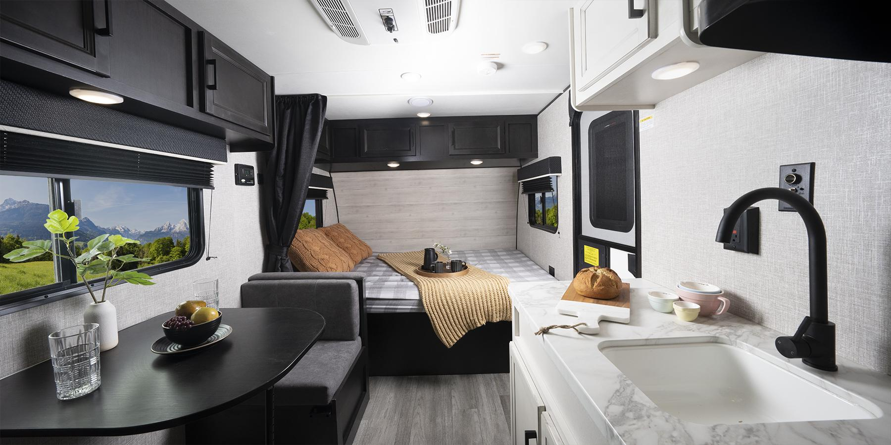
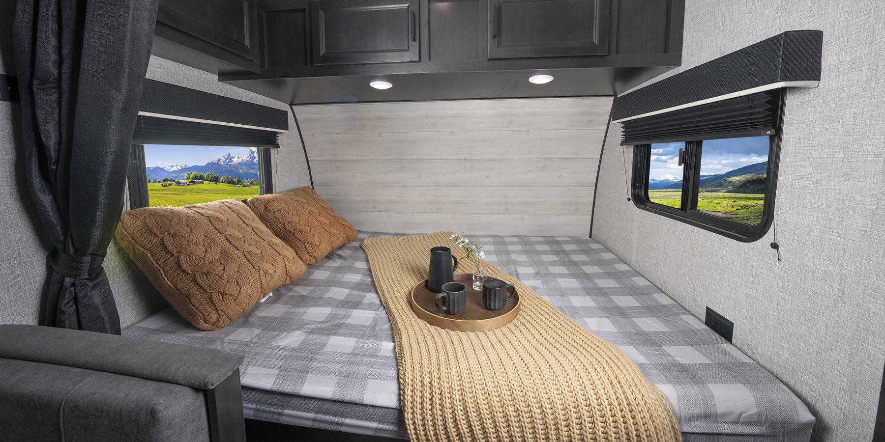
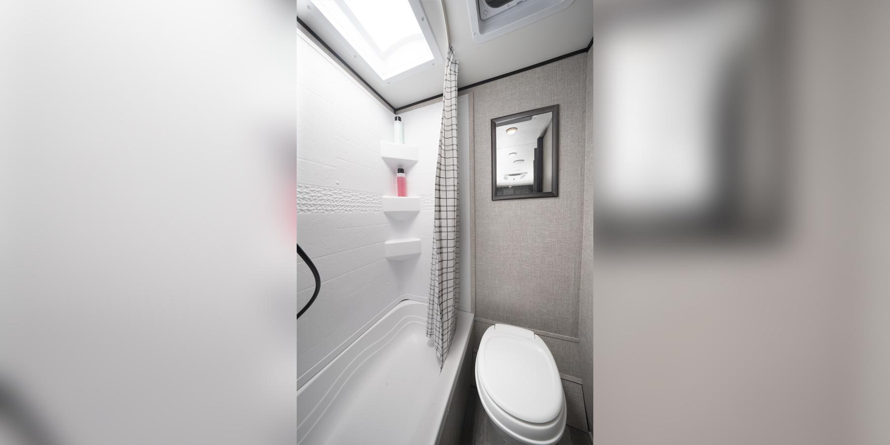
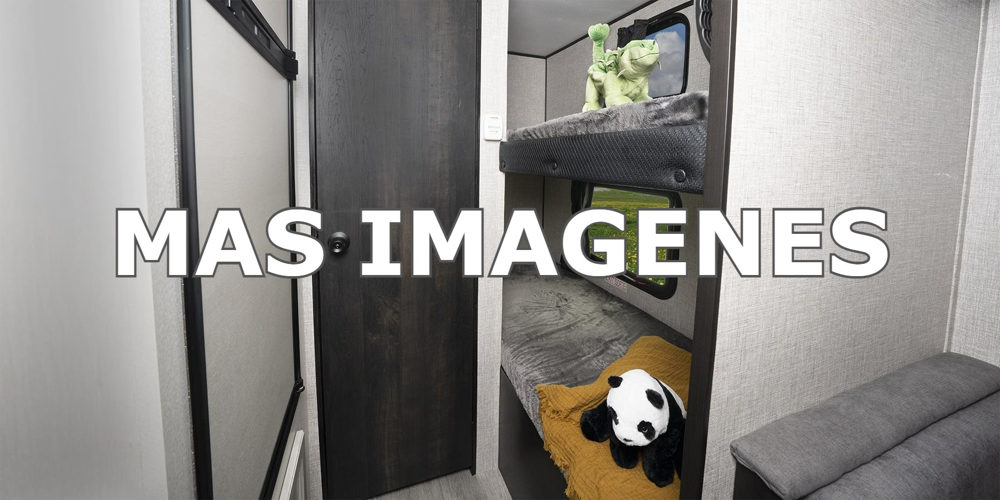
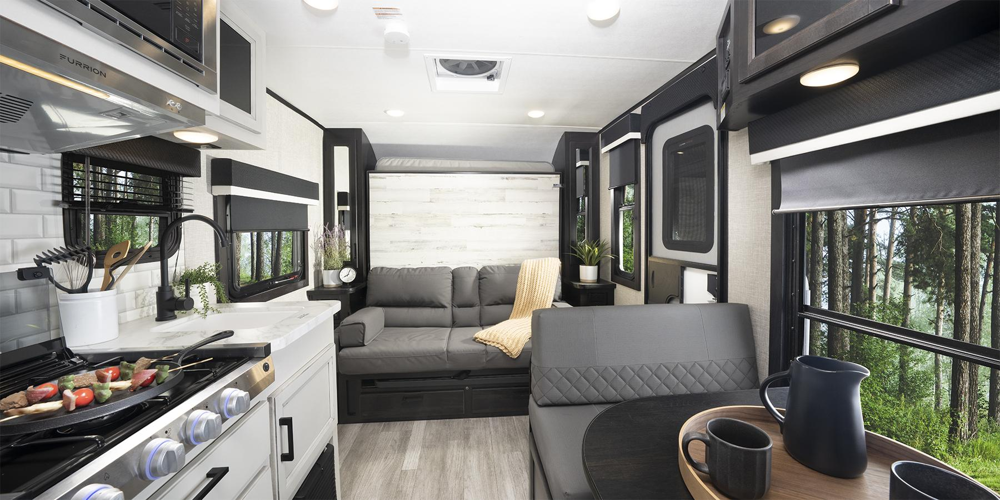
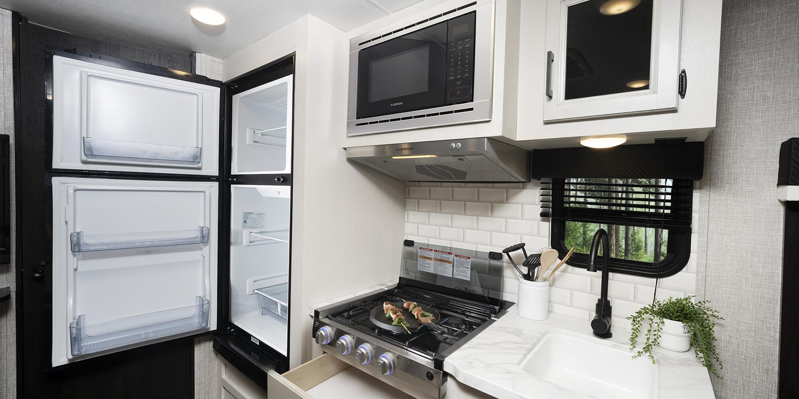
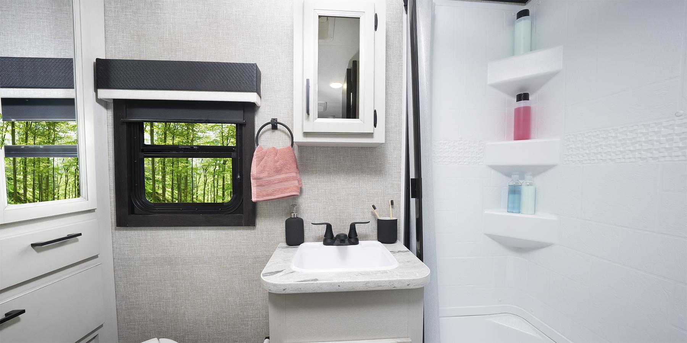
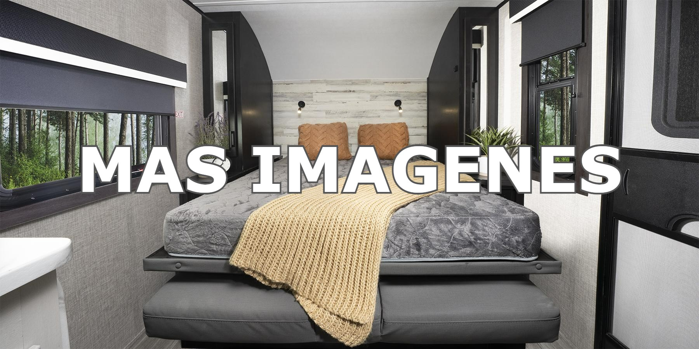

MOTORHOME Clase A
El clase A de Rodantes 40. Equipado con el paquete de conducción y manejo JR40® de Rodantes 40, que incluye un nuevo estabilizador de dirección Bilstein®, el Clase A es fácil de conducir y manejar. Los estándares incluyen puertas de gabinetes de madera, cajones y fascia con iluminación LED decorativa, dos aires acondicionados con sistema de administración de energía y panel solar estándar de 190 W con controlador doble y batería secundaria.


MOTORHOME Todo Terreno
Pequeño pero poderoso, el Todo Terreno Ruta 40 brinda un manejo resistente en todo terreno con comodidades de lujo cuando está estacionado en su sitio. El paquete de conducción y manejo JRide® de Ruta 40 hace que conducir esta camioneta, que ya es fácil de manejar, sea un sueño. Construido sobre el chasis Sprinter 4X4 Premium Mercedes-Benz®, el Todo Terreno cuenta con un asiento de banco doble con dos cinturones de seguridad y funciones de deslizamiento y reclinación, así como un garaje trasero con litera superior desplegable eléctrica con una capacidad de 750 libras.


CASILLA RODANTE Ruta 40 Fligt SLX
Con menos de 1,500kg de peso seco, este remolque de viaje más corto de un solo eje es el comienzo perfecto en la alineación de los campistas Jay Flight. El SLX hace que salir a la carretera sea más fácil con su tamaño fácil de remolcar y su estándar de preparación de cámara de posición lateral y de reversa. Su tamaño y peso le brindan una maniobrabilidad ágil, y las ventanas polarizadas oscuras le ofrecerán privacidad y protección UV en esos días calurosos y soleados.
   CASILLA RODANTE Ruta 40 Feather Micro
El Ruta 40 Feather Micro es el remolque de viaje más liviano de Ruta 40 y puede ser remolcado por la mayoría de los vehículos de remolque de tamaño mediano. Es el siguiente paso ideal para aquellos que quieren mover su saco de dormir del suelo de una tienda de campaña a una cama en su propia casa rodante. El sistema JayPort con plancha de 17 pulgadas para cocinar al aire libre significa que no tiene que renunciar a todos los aspectos de acampar en tiendas de campaña que disfruta, como cocinar al aire libre. Nuestros neumáticos todoterreno te permiten explorar nuevos lugares y tener nuevas aventuras. El Jay Feather Micro tiene todo lo que necesita para elevar su experiencia de campamento a un nuevo nivel.
   